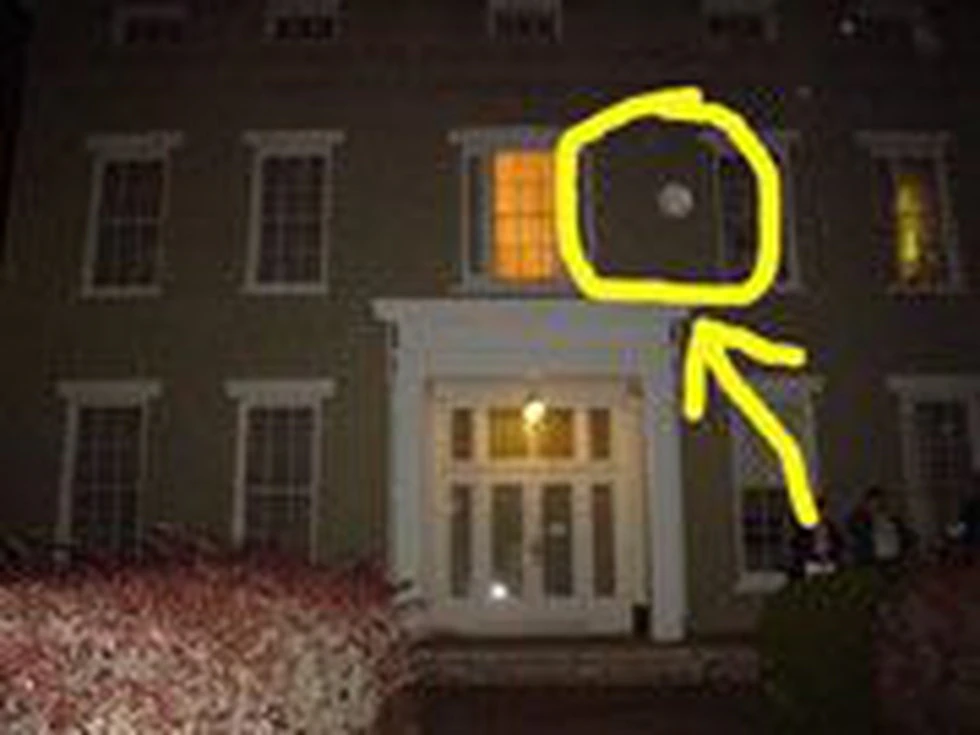
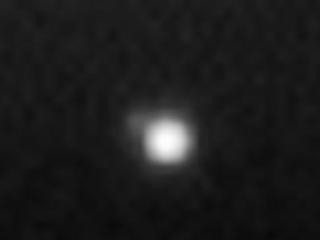
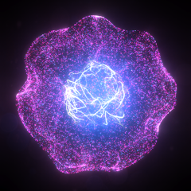
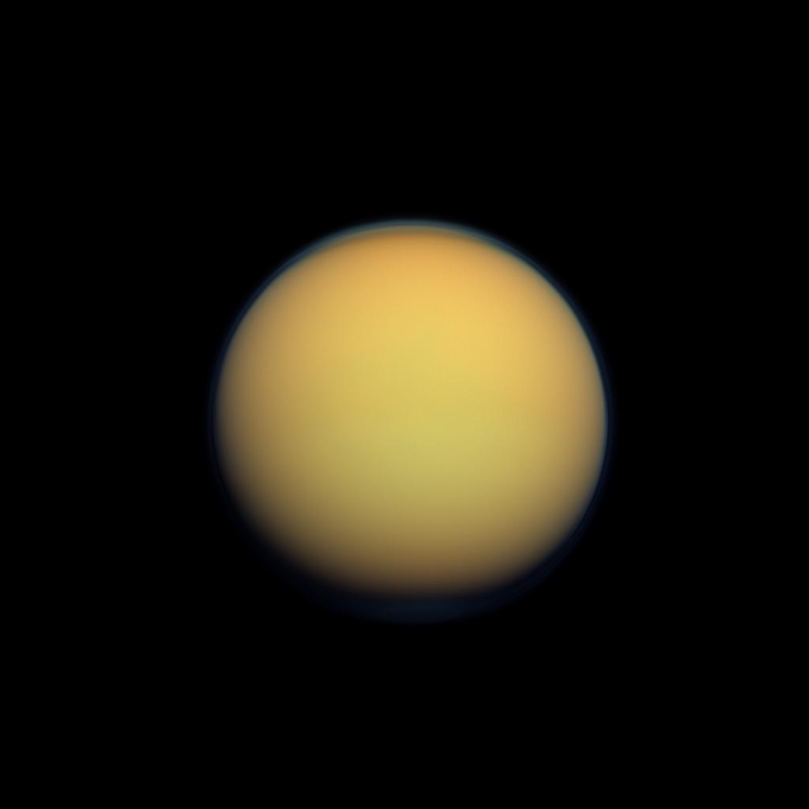
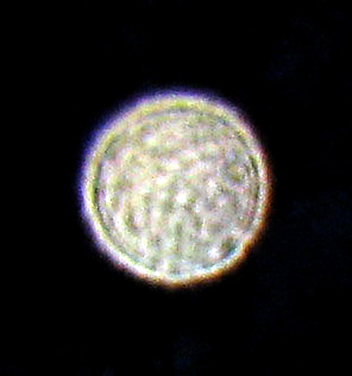

The Museum of Orbs
Here you will find the full history of orbs and orb technology. It's in a smaller font and will be lower contrast.

Orbs, Just Circles?




orb 1
orb 2
orb 3
orb 4
Orbs are real and they are coming for you.
We must do more to tackle the orb menace
before it is too late and they take all
of our bread and butter. I am a real expert
with a background in paranormal investigation,
so you can trust what I'm saying.
-Dr.Orbman, MD
action stuff